국내여행안내사-1차 (2021-11-06 기출문제)
1과목: 한국사
1. 다음과 같은 법을 시행하였던 나라에 관한 설명으로 옳은 것은?
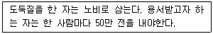
- 동맹이라는 제천 행사가 열렸다.
- 왕 아래 상, 대부, 장군을 두었다.
- 소를 죽여 그 굽으로 길흉을 점쳤다.
- 특산물로 과하마, 반어피가 유명하였다.
(정답률: 알수없음)

2. 다음 역사서의 저자를 바르게 연결한 것은?
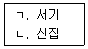
- ㄱ: 거칠부, ㄴ: 김대문
- ㄱ: 이문진, ㄴ: 거칠부
- ㄱ: 고흥, ㄴ: 이문진
- ㄱ: 김대문, ㄴ: 고흥
(정답률: 알수없음)
3. 원 간섭기의 고려에 관한 설명으로 옳지 않은 것은?
- 전제개혁을 단행하여 과전법을 시행하였다.
- 원은 공녀라 하여 고려의 처녀들을 뽑아 갔다.
- 중서문하성과 상서성을 합쳐 첨의부라 하였다.
- 원은 다루가치를 파견하여 내정을 간섭하였다.
(정답률: 알수없음)
4. 고려 사회에 관한 설명으로 옳은 것을 모두 고른 것은?
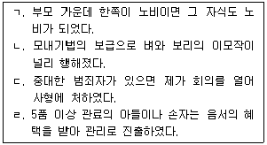
- ㄱ, ㄴ
- ㄱ, ㄹ
- ㄴ, ㄷ
- ㄷ, ㄹ
(정답률: 알수없음)
5. 다음 사건 가운데 시간 순서상 가장 마지막에 일어난 것은?
- 기묘사화
- 임진왜란
- 인조반정
- 4군 6진 설치
(정답률: 알수없음)
6. 정조(正祖)에 관한 설명으로 옳지 않은 것은?
- 속대전을 편찬하였다.
- 수원에 화성을 축조하였다.
- 초계문신 제도를 실시하였다.
- 친위 부대인 장용영을 설치하였다.
(정답률: 알수없음)
7. 다음 설명에 해당하는 단체는?
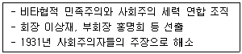
- 신간회
- 신민회
- 대한 광복회
- 대한 자강회
(정답률: 알수없음)
8. 다음 내용이 포함된 헌법에 의거하여 선출된 대통령은?
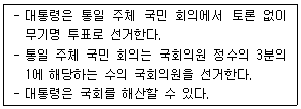
- 김영삼
- 노태우
- 박정희
- 이승만
(정답률: 알수없음)
9. 경주 호우총에서 출토된 ‘호우명 그릇’밑면의 명문에 나오는 인물에 관한 설명으로 옳은 것은?
- 왕의 칭호를 마립간으로 고쳤다.
- 금관가야와 대가야를 정복하였다.
- 율령을 반포하고 불교를 공인하였다.
- 신라의 구원요청으로 왜군을 격퇴하였다.
(정답률: 알수없음)
10. 밑줄 친 ‘북국’에 관한 설명으로 옳은 것은?
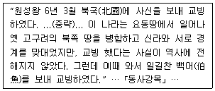
- 신라와 시종 친밀한 관계를 유지하였다.
- 불교 관련 문화재가 전혀 남아 있지 않다.
- 일본과 서로 적대의식을 갖고 교류하지 않았다.
- 전성기 때 중국인들이 해동성국이라 불렀다.
(정답률: 알수없음)
11. 고려 후기에 재조대장경(팔만대장경)을 만들게 된 계기는?
- 거란의 침입
- 여진의 침입
- 몽골의 침입
- 홍건적의 침입
(정답률: 알수없음)
12. 세종 때 편찬된 것을 모두 고른 것은?
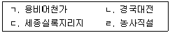
- ㄱ, ㄴ
- ㄱ, ㄹ
- ㄴ, ㄷ
- ㄷ, ㄹ
(정답률: 알수없음)
13. 조선 후기 농업과 상공업에 나타난 특징으로 옳은 것은?
- 청, 일본과의 무역이 완전히 단절되었다.
- 민간 상인들의 활동이 종전 보다 위축되었다.
- 지대를 정액으로 납부하는 도조법이 나타났다.
- 민간인에게 광산 채굴을 일절 허용하지 않았다.
(정답률: 알수없음)
14. 일제의 식민지 조선에 대한 경제 침탈 정책이 아닌 것은?
- 토지조사사업
- 임야조사사업
- 산미증산계획
- 물산장려운동
(정답률: 알수없음)
15. 다음 산건을 발생한 순서대로 올바르게 나열한 것은?
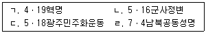
- ㄱ→ㄴ→ㄹ→ㄷ
- ㄱ→ㄷ→ㄴ→ㄹ
- ㄴ→ㄱ→ㄷ→ㄹ
- ㄴ→ㄹ→ㄱ→ㄷ
(정답률: 알수없음)
2과목: 관광자원해설
16. 자연관광자원의 개념에 관한 설명으로 옳지 않은 것은?
- 레크레이션 기능을 갖추고 있어야 한다.
- 자연미, 신비감, 특이함을 갖춘 경관미가 있어야 한다.
- 관광객의 욕구를 충족시켜 줄 수 있는 자연적인 대상이다.
- 인위적으로 제작된 문화유산으로 보존할만한 가치가 있고 매력을 느낄 수 있는 자원이다.
(정답률: 알수없음)
17. 전통세시풍속에 속하지 않는 것은?
- 정월대보름
- 칠월칠석
- 곶자왈
- 설날
(정답률: 알수없음)
18. 자연관광자원의 자연환경요인으로 옳은 것을 모두 고른 것은?
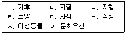
- ㄱ, ㄷ, ㅁ
- ㄱ, ㅂ, ㅅ, O
- ㄷ, ㄹ, ㅁ, ㅂ, O
- ㄱ, ㄴ, ㄷ, ㄹ, ㅂ, ㅅ
(정답률: 알수없음)
19. 축제의 기능이 아닌 것은?
- 종교적 기능
- 정치적 기능
- 자연적 기능
- 예술적 기능
(정답률: 알수없음)
20. 국가지정문화재가 아닌 것은?
- 천연기념물
- 국가민속문화재
- 문화재자료
- 보물 및 국보
(정답률: 알수없음)
21. 세계 유일의 대장경판 보관용 건물로서 유네스코 세계문화유산으로 등재된 15세기 건축물은?
- 영주 부석사 무량수전
- 합천 해인사 장경판전
- 순천 송광사 국사전
- 안동 봉정사 극락전
(정답률: 알수없음)
22. 우리나라에 현존하는 종 가운데 가장 오래되었고, 고유한 특색을 갖춘 문화재는?
- 상원사 동종
- 성덕대왕 신종
- 옛 보신각 동종
- 용주사 동종
(정답률: 알수없음)
23. 한 명의 소리꾼이 고수의 북장단에 맞추어 서사적인 노래와 말, 몸짓을 섞어 창극조로 부르는 민속예술의 한 갈래인 국가무형문화재는?
- 판소리
- 대금정악
- 가곡
- 고성오광대
(정답률: 알수없음)
24. 국보로 지정된 석비의 명칭이 옳지 않은 것은?
- 서울 북한산 신라 진흥왕 순수비
- 천안 봉선홍경사 갈기비
- 경주 태종무열왕릉비
- 창녕 백제 진흥왕 척경비
(정답률: 알수없음)
25. 정선(1676~1759)이 그린 그림으로 옳은 것은?
- 인왕제색도
- 자화상
- 단원풍속화첩
- 월야산수도
(정답률: 알수없음)
3과목: 관광법규
26. 관광기본법에 관한 설명으로 옳은 것은?
- 정부는 관광진흥의 기반을 조성하고 관광산업의 경쟁력을 강화하기 위하여 관광진흥에 관한 기본계획을 3년마다 수립ㆍ시행하여야 한다.
- 정부는 매년 관광진흥계획에 관한 시책과 동향에 대한 보고서를 정기국회가 시작하기 전까지 국회에 제출하여야 한다.
- 관광진흥의 방향 및 주요 시책에 대한 수립ㆍ조정, 관광진흥계획의 수립 등에 관한 사항을 심의ㆍ조정하기 위하여 문화체육관광부장관 소속으로 국가관광전략회의를 둔다.
- 국가관광전략회의의 구성 및 운영 등에 필요한 사항은 법률로 정한다.
(정답률: 알수없음)
27. 관광진흥개발기금법상 관광진흥개발기금을 조성하는 재원이 아닌 것은?
- 카지노사업자의 납부금
- 출국납부금
- 보세판매장 특허수수료의 100분의 50
- 한국관광협회중앙회의 공제 분담금
(정답률: 알수없음)
28. 관광진흥법상 권역별 관광개발계획(이하 ‘권역계획’이라 한다)에 관한 설명으로 옳지 않은 것은?
- 권역계획의 수립 주체는 시ㆍ도지사이다.
- 권역계획은 10년마다 수립한다.
- 문화체육관광부장관은 권역계획 수립지침을 작성하여야 한다.
- 시ㆍ도지사는 권역계획이 확정되면 그 요지를 공고하여야 한다.
(정답률: 알수없음)
29. 국제회의산업 육성에 관한 법률에 관한 내용으로 옳은 것은?
- 국제회의복합지구란 국제회의산업의 육성ㆍ진흥을 위하여 지정된 특별시ㆍ광역시 또는 시를 말한다.
- 문화체육관광부장관은 전자국제회의 기반의 확충을 위하여 인터넷 등 정보통신망을 통한 사이버 공간에서의 국제회의 개최를 지원할 수 있다.
- 문화체육관광부장관은 국제회의 산업육성기본계획을 매년 수립하여야 한다.
- 시ㆍ도지사는 문화체육관광부장관과의 협의를 거쳐 국제회의집적시설을 지정할 수 있다.
(정답률: 알수없음)
30. 관광진흥법상 유원시설업에 관한 설명으로 옳지 않은 것은?
- 유원시설업자는 안전성검사 대상 유기시설 또는 유기기구에 대하여 안전성검사를 받아야 한다.
- 안전성검사를 받아야 하는 유원시설업자는 사업장에 안전관리자를 항상 배치하여야 한다.
- 안전관리자는 문화체육관광부장관이 실시하는 유기시설 및 유기기구의 안전관리에 관한 교육을 정기적으로 받아야 한다.
- 종합유원시설업 및 일반유원시설업을 경영하려는 자는 관할관청에 신고하여야 한다.
(정답률: 알수없음)
31. 관광진흥법상 과태료 부과대상은?
- 관광사업자로 잘못 알아볼 우려가 있는 상호를 사용한 자
- 카지노 변경신고를 하지 아니하고 영업을 한 자
- 유원시설업의 변경신고를 하지 아니하고 영업을 한 자
- 카지노 검사합격증명서를 훼손 또는 제거한 자
(정답률: 알수없음)
32. 관광진흥법상 처분을 하기 전에 청문을 실시하여야 하는 경우가 아닌 것은?
- 국외여행 인솔자 자격의 취소
- 카지노기구의 검사 등의 위탁 취소
- 카지노기구의 검사 등의 위탁 취소
- 한국관광 품질인증의 취소
(정답률: 알수없음)
33. 관광진흥법령상 관광특구에 관한 설명으로 옳은 것은?
- 문화체육관광부장관은 관광특구를 방문하는 외국인관광객의 유치촉진 등을 위해 관광특구 진흥계획을 수립하여야 한다.
- 문화체육관광부장관은 관광특구의 활성화를 위하여 관광특구에 대한 평가를 3년마다 실시하여야 한다.
- 문화체육관광부장관은 관광특구 지정요건에 맞지 아니하거나 추진실적이 미흡한 관광특구에 대하여 관광특구의 지정취소, 면적조정 등 필요한 조치를 할 수 있다.
- 특별자치시장ㆍ특별자치도지사ㆍ시장ㆍ군수ㆍ구청장은 관광객 유치를 위하여 필요하다고 인정하는 시설 및 우수 관광특구에 대해서 관광진흥개발기금을 대여하거나 보조할 수 있다.
(정답률: 알수없음)
34. 관광진흥법상 관광사업을 경영하기 위하여 시ㆍ도지사 또는 시장ㆍ군수ㆍ구청장의 지정을 받아야 하는 사업은?
- 관광 편의시설업
- 종합유원시설업
- 카지노업
- 여행업
(정답률: 알수없음)
35. 관광진흥법상 관광특구에 관한 설명으로 옳지 않은 것은?
- 관광특구로 지정하려면 관광특구 전체면적 중 관광활동과 직접적인 관련성이 없는 토지의 비율이 10퍼센트를 초과하지 아니하여야 한다.
- 관광특구는 시장ㆍ군수ㆍ구청장의 신청에 따라 시ㆍ도지사가 정한다.
- 시ㆍ도지사는 관광특구진흥계획의 집행 상황을 연 1회 평가하여야 한다.
- 서울특별시에서 관광특구를 지정하려면 해당 지역의 최근 1년간 외국인 관광객 수가 10만명 이상이어야 한다.
(정답률: 알수없음)
4과목: 관광학개론
36. 푸드 마일리지(food mileage)와 관련 있는 것을 모두 고른 것은?
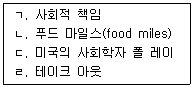
- ㄱ, ㄴ
- ㄱ, ㄹ
- ㄴ, ㄷ
- ㄷ, ㄹ
(정답률: 알수없음)
37. 복합리조트(IR)에 관한 설명으로 옳지 않은 것은?
- 카지노뿐만 아니라 호텔, 컨벤션, 쇼핑 등이 복합적으로 통합된 리조트를 의미한다.
- 라스베이거스에서 시작되었다.
- 싱가포르에서는 1개의 복합리조트를 허가하였다.
- 마리나베이샌즈는 2010년 개장하였다.
(정답률: 알수없음)
38. 다음 ( )에 들어갈 내용은?
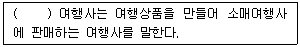
- 홀세일러(wholesaler)
- 리테일러(retailer)
- 온라인(on-line)
- 오프라인(off-line)
(정답률: 알수없음)
39. 우리나라가 의료법 개정을 통해 외국인 환자 유치를 허용한 연도는?
- 2006년
- 2009년
- 2012년
- 2015년
(정답률: 알수없음)
40. 여행업의 산업적 특성이 아닌 것은?
- 계절성이 높은 산업
- 수요탄력성이 낮은 산업
- 고정자산 비중이 낮은 산업
- 창업이 용이한 산업
(정답률: 알수없음)
41. 다음 설명에 해당하는 것은?
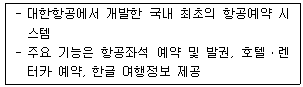
- TOPAS
- ABACUS
- GALILEO
- SABRE
(정답률: 알수없음)
42. 다음 설명에 해당하는 것은?
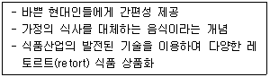
- Slow Food
- Local Food
- LOHAS
- HMR
(정답률: 알수없음)
43. 우리나라 관광발전사에 관한 설명으로 옳지 않은 것은?
- 1970년대에 국제관광공사가 발족되었다.
- 1980년대에 해외여행 완전자유화 조치가 이루어졌다.
- 1990년대에 경제협력개발기구에 가입하여 선진국 관광정책기구들과 협력이 이루어졌다.
- 2000년대에 관광산업의 선진화 워년이 선포되었다.
(정답률: 알수없음)
44. 우리나라 관광기구의 약자가 올바르게 짝지어진 것을 모두 고른 것은?
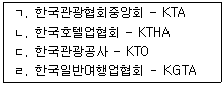
- ㄱ, ㄴ
- ㄱ, ㄷ
- ㄴ, ㄷ
- ㄴ, ㄹ
(정답률: 알수없음)
45. 관광현상 구성요소 간의 관계를 유기적으로 살펴보는 데 초점을 두는 관광의 정의는?
- 경제적 정의
- 사회문화적 정의
- 여가활동적 정의
- 시스템적 정의
(정답률: 알수없음)
46. 국제관광에 관한 설명으로 옳은 것은?
- 1년 이상 방문객을 관광객으로 본다.
- 경제협력개발기구(OECD)에서는 국제관광객과 영구방문객으로 구분하고 있다.
- 관광객 수용국 입장에서 인바운드와 아웃바운드로 구분된다.
- 1990년대 이후 급성장하였다.
(정답률: 알수없음)
47. 관광코스 유형이 아닌 것은?
- 안전핀형
- 스푼형
- 탬버린형
- 방황형
(정답률: 알수없음)
48. 코틀러(P.Kotler)가 Marketing Management(1984)에서 밝힌 제품의 3가지 수준이 아닌 것은?
- 확장제품
- 주변제품
- 실제제품
- 핵심제품
(정답률: 알수없음)
49. 마케팅 용어에 관한 설명으로 옳은 것은?
- 마케팅믹스는 상품(product), 가격(price), 포장(packaging), 판매촉진(promotion)의 최적결합 노력이다.
- 시장세분화는 하나의 시장을 이질성을 지닌 하위시장으로 나누어 마케팅하는 것이다.
- 표적시장은 세분시장 특성별로 각각 적합한 마케팅믹스를 제공하는 것이다.
- 포지셔닝은 불특정 시장에 있는 고객의 마음속에 존재하기 위해 마케팅하는 것이다.
(정답률: 알수없음)
50. 국민관광에 관한 설명으로 옳지 않은 것은?
- 국민이 자발적으로 관광활동에 참여하는 관광이다.
- 2000년대부터 본격적으로 진흥되었다.
- 국민관광은 국민의 후생ㆍ복지 측면에서 중요하다.
- 국민관광 이동총량이란 1년 동안 국민들이 국내관광여행 목적으로 이동한 총량이다.
(정답률: 알수없음)